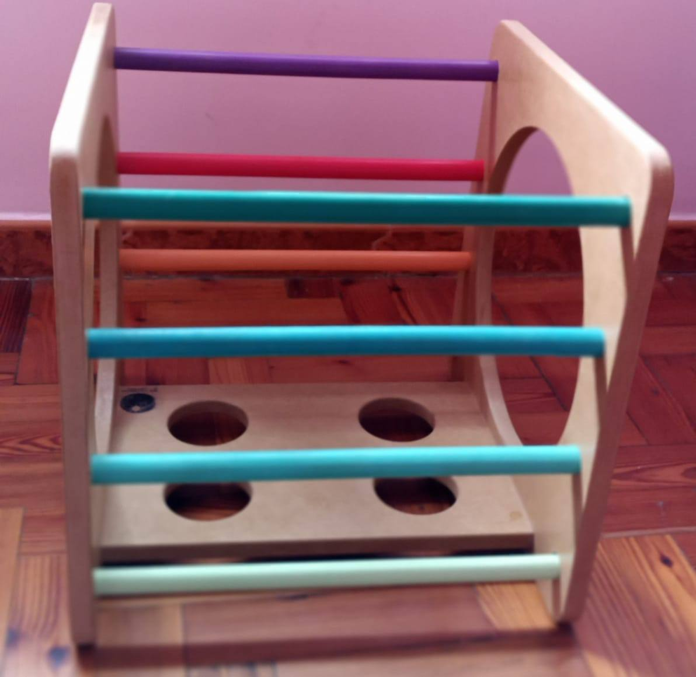

Balancin

Puede utilizarse como Hamaca mecedora, puente, tunel, trepador, guarida, y combinado con los otros
mobiliarios de la plaza ofrece aún mas posibilidades.
Da herramientas para la motricidad gruesa, el equilibrio, y el juego simbólico. unt.
Da herramientas para la motricidad gruesa, el equilibrio, y el juego simbólico. unt.
Triángulo

Este mobiliario es el complemento perfecto de la Rampa, a la cual sirve de apoyo para transformarse en
un ascenso o descenso super divertido.
Además sirve de sostén para comenzar a pararse, y al empujarlo sirve de base para acompañar los primeros pasos.
Además sirve de sostén para comenzar a pararse, y al empujarlo sirve de base para acompañar los primeros pasos.
Cubo

El cubo ayuda a los niños pequeños a obtener experiencia de espacio (en interiores, exteriores, hacia
adelante, hacia atrás, etc.).
Puede utilizarse combinado con otros cubos y formar un túnel o con la rampa para formar un laberinto donde los niños pueden jugar y desarrollar su motricidad, equilibrio, seguridad, coordinación y visión espacial.
Puede utilizarse combinado con otros cubos y formar un túnel o con la rampa para formar un laberinto donde los niños pueden jugar y desarrollar su motricidad, equilibrio, seguridad, coordinación y visión espacial.
Mesa y sillas

Material Fibrofacil. La parte blanca esta pintada con hidroesmalte al agua, la parte que queda en madera
esta protegida con barniz al agua.
Las sillas pueden ser mesa, y tambien pueden ser utilizadas en dos alturas acompañando el crecimiento de los peques.
Las sillas pueden ser mesa, y tambien pueden ser utilizadas en dos alturas acompañando el crecimiento de los peques.
Rampa

Es la combinación perfecta del triángulo, cubo o trepadora Pikler.
Suma complejidad a la exploración del movimiento, la motricidad y la autonomia, transformando la exploración motriz en un juego con equilibrio y altura.
Además los niños se ocupan de utilizarlo en el juego simbólico cuando son capaces de hacerlo.
Suma complejidad a la exploración del movimiento, la motricidad y la autonomia, transformando la exploración motriz en un juego con equilibrio y altura.
Además los niños se ocupan de utilizarlo en el juego simbólico cuando son capaces de hacerlo.
Círculo

A través de él van comprendiendo conceptos complejos como el equilibrio, la simetría y la resistencia.
Les abre la puerta de par en par al juego simbólico, a construir escenarios e imitar situaciones de la vida real.
Además, levantar estructuras estables con el arco iris les obliga a planificar y aplicar la lógica.
Les abre la puerta de par en par al juego simbólico, a construir escenarios e imitar situaciones de la vida real.
Además, levantar estructuras estables con el arco iris les obliga a planificar y aplicar la lógica.